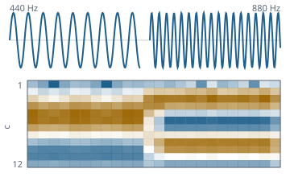

Ton lesen, abspielen und erkennen – mit Bordmitteln
Funktionsübersicht für die Präsentation des envisionz-Frameworks, Stand 05.10.2026. Eine gemeinsame Quellen-Schnittstelle für
PCM, eigene Dekoder für WAV, MP3 (Layer III), MPEG-1 Layer II, AAC und FLAC, ein eigener MP3-Kodierer mit verlustfreiem Schnitt, Entzerrer, Quellentrennung, Titelangaben lesen und schreiben, Internetradio, Wiedergabe und Mikrofon über javax.sound, MFCC-Merkmale,
Worterkennung mit geschlossenem Vokabular und die Merkmalskette für eine spätere Lauterkennung.
Je Verfahren: Zweck, Methoden, Einsatz im Framework, Anwendungen, Beispiele. Die Beispiele sind gekürzt.

SineSource und Mfcc gezeichnet: zwei Töne und ihre MFCC-Matrix.Grundsätze des Moduls
AudioSource; Player, Mischer und Merkmale wissen nicht, woher die Werte kommen.float, −1…+1, kanalgetrennt. Jede Verarbeitungsstufe rechnet in Gleitkomma. Verschränkt wird nur unmittelbar vor der Soundkarte.AudioSystem beim Lesen. javax.sound.sampled dient nur der Ein- und Ausgabe an der Soundkarte; Lautstärke wird als Faktor in float gerechnet, nicht über MASTER_GAIN.Quellen, Wiedergabe und Mischer envisionz.audio
AudioSource, SineSource, MicSource – woher die Abtastwerte kommen
Die eine Schnittstelle: Abtastrate, Kanalzahl, Länge (oder LAENGE_UNBEKANNT), read in einen Puffer [kanal][rahmen], wahlweise springbar. SineSource ist Quelle und Prüfmittel zugleich; der Winkel wird aus dem Rahmenzähler neu berechnet, nicht aufaddiert. MicSource liest das Mikrofon über eine TargetDataLine und führt eine Verlustbilanz.
Methoden
sampleRate(),channels(),frameLength(),position()read(ziel, offset, frames)– −1 nur am Ende;seekable(),seek(frame)SineSource(rate, kanaele, frequenz, amplitude, rahmen),SineSource.kammerton(rate)MicSource(rate, kanaele),MicSource(mischer, rate, kanaele),eingaenge(rate, kanaele),starte(),beende()verloreneRahmen(),zittern(),bilanz(),pegel()
Eingesetzt in
Wofür
Jede Tonquelle gleich behandeln: abspielen, analysieren, in Merkmale überführen.
Player, Tonmischer, Versatzquelle, Pegel – hörbar machen
Player spielt streamend über eine SourceDataLine: Stoppen verwirft den Gerätepuffer (flush), das reguläre Ende spielt ihn aus (drain). Tonmischer liegt davor: Lautstärke, lineare Balance (Mitte heißt Faktor eins), Kanalbild und Stumm; die Aussteuerungsanzeige misst vor dem Lautstärkeregler, also die Aufnahme. Versatzquelle verschiebt eine Quelle durch Stille davor oder Wegwerfen am Anfang – exakt im Datenstrom statt in der Soundkarte.
Methoden
Player(quelle),play(),pause(),stop(),seek(sekunden),setGain(faktor),warteAufEnde(),zustand()Tonmischer:lautstaerke,balance,stumm,kanalbild(Kanalbild.MONO|LINKS|RECHTS|TAUSCH|STEREO),ueber(quelle),pegel()Versatzquelle(quelle, sekunden)– positiv Stille davor, negativ Anfang wegPegel.von(puffer, rahmen),spitzeDb(),effektivDb(),uebersteuert(),balken(breite)
Eingesetzt in
Wofür
Ton einer DVD-Sicherung synchron zum Bild abspielen, Kanäle einzeln abhören, Aussteuerung der Aufnahme beurteilen.
Beispiel – WAV mit Mono-Summe und Vorlauf abspielen
Tonmischer mischer = new Tonmischer();
mischer.kanalbild(Tonmischer.Kanalbild.MONO);
AudioSource kette = mischer.ueber(new Versatzquelle(new WavReader(new File("aufnahme.wav")), 0.35));
try (Player p = new Player(kette)) {
p.play();
p.warteAufEnde();
}WAV lesen und schreiben envisionz.audio.wav
WavReader, WavWriter, WavFormat – RIFF direkt
Streamend und springbar gelesen, beim Schreiben werden die Größen nachgetragen. Die Fallen des Formats sind im Code adressiert: 8 Bit ist vorzeichenlos (Nullpunkt 128), ungerade Chunks haben ein Füllbyte außerhalb der Chunkgröße, WAVE_FORMAT_EXTENSIBLE trägt den echten Code in der Subformat-GUID, eine unbrauchbare data-Größe (0 oder 0xFFFFFFFF) heißt „Rest der Datei“. Übersteuerung wird begrenzt, nicht umlaufen gelassen.
Methoden
WavReader(file),format(),seek(frame),read(...)WavWriter(ziel, format, rate, kanaele),write(quelle, offset, frames)WavWriter.schreibe(quelle, ziel, format)– eine ganze Quelle in eine DateiWavFormat.PCM_U8,PCM_S16,PCM_S24,IEEE_F32
Eingesetzt in
Wofür
Tonauszüge aus DVD-Material als WAV sichern, Datensätze für die Worterkennung einlesen.
Beispiel – Kammerton als 24-Bit-WAV
WavWriter.schreibe(new SineSource(48000, 2, 440.0, 0.5, 48000), new File("a440.wav"), WavFormat.PCM_S24);MP3-Dekoder envisionz.audio.mp3
Mp3Source – MPEG-1/2/2.5 Layer III, wertgenau springbar
Die ganze Kette in eigenen Klassen: Rahmensuche (Mp3FrameReader, Mp3Header), Nebeninformation (SideInfo, Granule), Bit-Reservoir (ByteVorrat), Skalenfaktoren, Huffman, Requantisierung, MS- und Intensity-Stereo, Alias-Reduktion und IMDCT (Hybridsynthese), Synthese-Filterbank. Gesprungen wird über einen eigenen Index aller Rahmenanfänge statt über die hundert Stützstellen des Xing-Kopfs; nach einem Sprung werden drei Rahmen verworfen, damit Reservoir, Überlappung und Filtergedächtnis wieder stimmen. Hintergrund, Formeln und Pseudocode →
Methoden
Mp3Source(file),read(...),seek(rahmen),frameLength();ANLAUF_RAHMEN = 3Mp3FrameReader.naechster()→Rahmen,id3v2Laenge(),resyncStellen()Mp3Decoder.dekodiere(rahmen, ziel),vergissZustand()- Stufen einzeln:
StereoVerarbeitung.verarbeite,Hybridsynthese.reduziereAlias/synthetisiere,Synthesefilter.synthetisiere
Eingesetzt in
Wofür
MP3-Sammlungen ohne Fremdbibliothek abspielen und analysieren; Ausgangsmaterial für Codec-Messungen.
Beispiel – ab Sekunde 60 abspielen
Mp3Source mp3 = new Mp3Source(new File("titel.mp3"));
Player p = new Player(mp3);
p.seek(60.0);
p.play();MPEG-1 Layer II envisionz.audio.mp2
Mp2Decoder, Mp2Source, Mp2Tabellen – der Ton von DVD und Video-CD
DVD-Video trägt überwiegend Layer II. Gegenüber Layer III fehlen Huffman, Fensterumschaltung und Aliasreduktion; die Synthese-Filterbank ist dieselbe. Weil Layer II kein Reservoir über Rahmengrenzen kennt, prüft sich der Dekoder selbst: nach allen Feldern muss der Bitzeiger knapp vor dem Rahmenende stehen (restbits()). Mp2Source glaubt dem ersten Sync nicht, sondern verlangt drei passende Rahmen hintereinander und zählt Aussetzer. Hintergrund, Formeln und Pseudocode →
Methoden
Mp2Source(InputStream),bitrate(),rahmen(),aussetzer()– nicht springbarMp2Decoder(kanaele),dekodiere(d, versatz, rahmenlaenge, crc, ziel),restbits(),belegteTeilbaender()Mp2Tabellen.stufen,zuteilungsbits,skalenfaktor,skalenfaktorPruefen(),faktorenPruefen()
Eingesetzt in
Wofür
Den Ton einer DVD-Sicherung abspielen und als WAV auslesen.
Beispiel – Layer-II-Strom als WAV sichern
try (Mp2Source ton = new Mp2Source(ein)) { // ein: InputStream des Tonstroms
WavWriter.schreibe(ton, new File("ton.wav"), WavFormat.PCM_S16);
}Entzerrer, Gesangfilter, Abgriff envisionz.audio
Entzerrer, Biquad, Entzerrerquelle – zehn Bänder
Zehn Glockenfilter in Oktavabständen von 31 Hz bis 16 kHz (Güte 1,41, ±12 dB) nach den bekannten Biquad-Formeln, Vorverstärkung und ein Umgehen-Schalter, der über 1024 Werte weich überblendet statt zu knacken. antwortDb(f) rechnet den Betragsgang aus den Koeffizienten; die Probe misst ihn am gefilterten Sinus nach.
Methoden
Entzerrer(fs, kanaele),setBand(i, db),setBaender(werte),setVorverstaerkung(db),setUmgangen(b)antwortDb(f),spitzeDb(),verarbeite(daten, off, n),leeren()Biquad.entwurf(Form, fs, f0, db, guete),schritt(x, stand)Entzerrerquelle(quelle, entzerrer)– alsAudioSourcein jede Kette
Eingesetzt in
Wofür
Klang anpassen beim Abspielen und beim Speichern.
Gesangfilter, Abgriff – Mitte/Seite und was gerade erklingt
Gesangfilter entfernt oder hebt die Stimme über Mitte und Seite heraus (Stimmband 120 Hz bis 8 kHz, Bass und Höhen der Mitte bleiben). Abgriff hält fest, welche Werte der Player gerade an die Soundkarte gibt, damit Anzeigen synchron zum Klang laufen und nicht zum Lesen.
Methoden
Gesangfilter(fs, kanaele),setModus(Modus.AUS|ENTFERNEN|HERAUSHEBEN),quelle(quelle, filter)Abgriff(kanaele, kapazitaet),schreibe,quellRahmenBei(ausgabeStelle),lies(bis, ziel, n)
Eingesetzt in
Wofür
Karaoke-Fassungen, Anzeigen ohne Versatz.
Titelangaben envisionz.audio.id3
Id3Leser, Id3Schreiber – ID3 lesen und schreiben
Gelesen werden ID3v1 (mit Spurnummer) und ID3v2.2 bis 2.4 samt Cover, UTF-16, Unsynchronisation und erweitertem Kopf. Geschrieben wird ID3v2.4 mit Titel, Interpret, Album, Jahr, Spur, Genre und Cover; fremde Rahmen eines vorhandenen v2.3/v2.4-Kopfes bleiben erhalten, ein ID3v1-Block wird nachgezogen. Geschrieben wird in eine Nachbardatei, die nachgelesen wird – die Tonbytes müssen per SHA-256 gleich sein –, erst dann ersetzt sie das Original.
Methoden
Id3Leser.lies(pfad)→Angaben(titel, interpret, album, jahr, spur, genre, bild, bildart)Id3Leser.v2(block),v1(block)Id3Schreiber.schreibe(pfad, angaben),MAX_BILD(16 MB)
Eingesetzt in
Wofür
Musiksammlungen beschriften, ohne den Ton anzufassen.
Beispiel – Titel und Cover setzen
Id3Schreiber.schreibe(Path.of("lied.mp3"), new Id3Leser.Angaben(
"Titel", "Band", "Album", "2026", "3/12", "Rock", cover, "image/jpeg"));MP3-Kodierer und verlustfreier Schnitt envisionz.audio.mp3
Mp3Kodierer – MPEG-1 Layer III, CBR und VBR
Analysefilterbank (Gegenstück zum Synthesefilter, Rundlauf mit 84 dB Abstand), MDCT mit Fensterumschaltung (kurze Blöcke bei Anschlägen), psychoakustisches Modell mit Bark-Spreizung und Tonalität, innere und äußere Quantisierungsschleife, Skalenfaktoren, freie Regionsgrenzen, Bit-Reservoir bis 511 Byte, Mitte/Seite. VBR mit Qualität 0 bis 9 wählt je Rahmen die kleinste passende Bitrate und schreibt einen Xing-Kopf mit Inhaltsverzeichnis.
Methoden
Mp3Kodierer(aus, rate, kanaele, kbps),schreibe(pcm, off, n),close()Mp3Kodierer.kodiere(quelle, datei, kbps),kodiereVbr(quelle, datei, qualitaet)- Stufen einzeln:
Analysefilterbank,Hybridanalyse,Psychoakustik,Granulkodierer,Bitstrom
Eingesetzt in
Wofür
Eigene MP3-Dateien erzeugen, ohne Fremdkodierer.
Beispiel – Datei als VBR kodieren
double kbitS = Mp3Kodierer.kodiereVbr(new WavReader(new File("roh.wav")), new File("lied.mp3"), 4);Rahmenschnitt – MP3 schneiden ohne Neukodieren
Originalrahmen werden kopiert, nur an den Nähten entstehen kurze Brücken aus neu kodierten Rahmen. Die Brücke trägt am Ende die Reservoirbytes, die der folgende Originalrahmen erwartet; zwei Einschwingrahmen und der Versatz der Filterbank (1057 Werte) sind berücksichtigt. Drei Minuten Musik: über 95 % der Rahmen bleiben bitgleich.
Methoden
Rahmenschnitt(original),moeglich(rate, kanaele),schreibe(liste, ton, aus, fortschritt)→Bericht
Eingesetzt in
Wofür
Werbung, Stille oder Fehlstellen aus Aufnahmen schneiden, ohne Qualitätsverlust.
Schnittliste envisionz.audio.schnitt
Schnittliste, Schnittquelle, Wellenuebersicht – zerstörungsfrei schneiden
Die Zeitachse ist eine Liste von Abschnitten der Quelle mit Pegel am Anfang und Ende; Ausschneiden, Einfügen, Blenden und Lautstärke ändern nur die Liste (200 Schritte rückgängig). Schnittquelle spielt die Liste rahmengenau ab, mit kurzer Rampe gegen Knacken an Nähten. Wellenuebersicht hält Spitzenwerte je 256 und 4096 Werte, damit die Wellenform jede Zoomstufe sofort zeichnet.
Methoden
Schnittliste(quelle, laenge),loesche,schneideAus,fuegeEin,blende,pegel,rueckgaengigSchnittquelle(liste, oeffner, rate, kanaele, von, bis),knackschutz(an)Wellenuebersicht.miss(quelle, fortschritt),spitzen(von, bis, kanal, aus)
Eingesetzt in
Wofür
Audio-Editor mit beliebig vielen Schritten zurück, ohne Zwischendateien.
Quellentrennung envisionz.audio.trennung
Spektraltrenner – Gesang, Begleitung, Schlagzeug
Kurzzeit-Fourier-Transformation (2048/512, Wurzel-Hann), eine Maske nach der Lage im Stereobild (Mitte) und eine harmonisch/perkussive Trennung per Medianfilter über Zeit und Frequenz. Vier Ausgaben: Gesang, Begleitung (Gesang + Begleitung = Original), Schlagzeug, ohne Schlagzeug. Rund zehnfache Echtzeit.
Methoden
Spektraltrenner(quelle, Modus.GESANG|BEGLEITUNG|SCHLAGZEUG|OHNE_SCHLAGZEUG),setModus,seek
Eingesetzt in
Wofür
Mitsingfassungen, Übungsspuren, Analyse einzelner Stimmen.
AAC-Dekoder envisionz.audio.aac
AacSource, AacDekoder, Mp4Leser, Mp4Schreiber – AAC-LC aus M4A, MP4 und ADTS
Eigener AAC-LC-Dekoder: Huffman-Codebücher mit Escape, Skalenfaktoren, Pulse, TNS, Rauschersatz, Mitte/Seite, Intensität, IMDCT über FFT mit Sinus- und KBD-Fenster und allen Fensterfolgen. 5.1 wird auf Stereo gemischt, von HE-AAC erklingt der AAC-LC-Kern mit halber Rate. Mp4Leser liest Probentabelle, Kodierer-Vorlauf (Edit-Liste oder iTunSMPB) und iTunes-Angaben samt Cover; Mp4Schreiber schreibt sie und berichtigt die Chunk-Lagen, wenn sich die Tondaten verschieben. Gegen eine Fremddekodierung 138 dB Abstand.
Methoden
AacSource(datei)– springgenau;AacSource(inputStream)– fortlaufender ADTS-StromAacDekoder(konfig).dekodiere(b, off, len)→[kanal][1024];AacKonfig.ausAsc,ausAdtsMp4Leser.spur(datei),angaben(datei);Mp4Schreiber.schreibe(pfad, angaben)
Eingesetzt in
Wofür
Musik aus Apple- und Android-Umgebungen abspielen, Internetradio im AAC-Format.
FLAC-Dekoder envisionz.audio.flac
FlacSource, FlacLeser, FlacSchreiber – verlustfrei
Rahmenkopf mit CRC-8, Unterrahmen CONSTANT, VERBATIM, FIXED und LPC bis Ordnung 32 mit „wasted bits“, Rice-Rest mit Partitionen und Escape, Stereo links/Seite, rechts/Seite und Mitte/Seite, Fuß mit CRC-16. 8, 16 und 24 Bit kommen wertgleich heraus; die MD5-Summe aus STREAMINFO wird beim Durchlesen nachgerechnet. Springen per Halbierungssuche über die Rahmenköpfe. Vorbis-Kommentare und Cover lesen und schreiben. Drei Minuten CD-Qualität in rund 0,3 s.
Methoden
FlacSource(datei),seek,md5Stimmt(),fehlerRahmen()FlacLeser.info(datei),angaben(datei);FlacSchreiber.schreibe(pfad, angaben)
Eingesetzt in
Wofür
Verlustfreie Musiksammlungen abspielen und beschriften.
Internetradio envisionz.audio.radio
Radiostrom, HttpLeser, Netzregeln – Sender sicher empfangen
MP3- und AAC-Sender mit ICY-Titeln hinter einem Vorpuffer von 512 KB; Playlisten (M3U, PLS) werden aufgelöst. Der eigene HTTP-Leser verbindet mit genau der geprüften Adresse: nur http/https, keine Ziele auf dem eigenen Rechner oder im Heimnetz (auch nicht nach einer Weiterleitung), höchstens drei Weiterleitungen, Grenzen für Kopfzeilen und Inhalte, Zeitlimits. Titel und Sendernamen werden bereinigt (Netztext): keine Steuerzeichen, keine Richtungswechsel, kein HTML für Swing. Auf die Platte kommt nichts.
Methoden
Radiostrom.oeffne(url, Netzregeln.STRENG, titelHoerer)–name(),art(),titel(),fuellstand()HttpLeser.oeffne(url, regeln, icy, maxBytes),HttpLeser.text(url, regeln, maxBytes)Netzregeln.STRENG.pruefe(url),oeffentlich(adresse);Playliste.adressen(text);Netztext.sauber(s, max)
Eingesetzt in
Wofür
Internetradio in der eigenen Anwendung, abschaltbar und ohne Einfallstor.
MFCC-Merkmale envisionz.audio.mfcc
Mfcc, MfccStrom, MelFilterbank, Delta
Die klassische Merkmalskette: Vorbetonung, Fenster, Leistungsspektrum (FFT aus framework-math), Mel-Filterbank, Logarithmus, DCT, Lifter. Übliche Einstellung je Abtastrate: 25-ms-Fenster, 10 ms Schritt, 13 Koeffizienten, 26 Filter. Delta ergänzt erste und zweite Ableitung, aus 13 werden 39 Werte; am Rand wird wiederholt statt mit Nullen gefüllt. Hintergrund, Formeln und Pseudocode →
Methoden
MfccEinstellung.fuer(rate),fensterRahmen(),schrittRahmen()new Mfcc(e).vonSignal(float[])→double[zeit][koeff];Mfcc.betoneVor(roh, beiwert)MfccStrom(quelle, e),naechstes(ziel)– laufend über eineAudioSourceMelFilterbank.zuMel/zuHertz;Delta.ableitung,Delta.mitAbleitungen(merkmale, weite)
Eingesetzt in
Wofür
Spracherkennung, Klangvergleiche, Merkmale als Eingang für Netze.
Beispiel – 39 Merkmale je 10 ms
double[][] m = new Mfcc(MfccEinstellung.fuer(16000)).vonSignal(signal);
double[][] m39 = Delta.mitAbleitungen(m, 2);Worterkennung envisionz.audio.kws
Datensatz, KwsTraining, KwsModell, Horcher – geschlossenes Vokabular
Ein paar Dutzend Wörter, selbst eingesprochen, ein Netz darauf. Wortgrenzen findet das Wort in der Aufnahme, Wortmerkmal bündelt es auf eine feste Zahl von Abschnitten mit Mittelwertabzug – damit unempfindlich gegen Lautstärke, Verschiebung und in Grenzen gegen Sprechtempo. KwsModell speichert Netz, Normierung, Wortliste und die ganze Merkmalseinstellung in einer .ennet-Datei, denn Modell und Merkmale gehören zusammen. Horcher sucht Wörter im laufenden Strom. Gegen Husten und Türklappern hilft nur die Ablehnschwelle (Vorgabe 0,6). Hintergrund, Formeln und Pseudocode →
Methoden
Datensatz.lies(ordner),teile(anteil, saat),erweitert(jeAufnahme, saat),bericht()KwsTraining.trainiere(datensatz, Einstellung.fuer(rate))→Ergebnis(modell(),genauigkeit(),verwechslungAlsText())KwsModell.lade(pfad),speichere(pfad),erkenneWort,erkenneAufnahme,schwelle(s)Horcher(quelle, modell),naechstes()→Fund;Augmentierung.varianten(...)
Eingesetzt in
Wofür
Sprachbefehle für die eigenen Anwendungen, ohne Cloud und ohne Fremdmodell.
Beispiel – trainieren und am Mikrofon horchen
Datensatz d = Datensatz.lies(Path.of("woerter")); // ein Ordner je Wort
KwsTraining.Ergebnis e = KwsTraining.trainiere(d, KwsTraining.Einstellung.fuer(d.rate()));
e.modell().speichere(Path.of("befehle.ennet"));
MicSource mic = new MicSource(d.rate(), 1);
mic.starte();
try (Horcher h = new Horcher(mic, e.modell())) {
Horcher.Fund f;
while ((f = h.naechstes()) != null) System.out.println(f.treffer());
}Merkmale für die Lauterkennung envisionz.audio.stt
Lautmerkmale, Kontextfenster – ein Vektor je Zeitschritt
Anders als bei der Worterkennung bleibt die Zeitachse erhalten: MFCC alle 10 ms, Mittelwertabzug über die Äußerung, erste und zweite Ableitung, dann die Nachbarfenster dazu. Das Kontextfenster ersetzt Rekurrenz: jedes Zeitfenster bleibt ein gewöhnliches Muster für ein gewöhnliches Netz. Üblich sind drei Nachbarn je Seite und jedes zweite Fenster, also 39 × 7 = 273 Werte je 20 ms. Hintergrund, Formeln und Pseudocode →
Methoden
Lautmerkmale.Einstellung.fuer(rate),breite(),werteJeRahmen()new Lautmerkmale(e).von(signal),ohneKontext(signal),zeitschritte(abtastwerte)Kontextfenster.baue(rahmen, weite[, schritt]),breite(merkmale, weite)
Eingesetzt in
Wofür
Eingang eines Akustikmodells für phonembasiertes Diktat (Fernziel, hängt an Trainingsdaten).
Einsatzmatrix im Framework
Welche Module welche Pakete heute nutzen, im Quelltext gezählt (ohne Proben).
| Modul | Quellen / Player / Mischer | WAV | MP3 | Layer II | AAC / FLAC | Kodierer / Schnitt | Radio | MFCC | Worterkennung | Lautmerkmale | Wofür |
|---|---|---|---|---|---|---|---|---|---|---|---|
| app-forensik | ● | ● | ● | Ton einer DVD-Sicherung abspielen, mischen, gegen das Bild versetzen, als WAV auslesen | |||||||
| app-audio | ● | ● | ● | ● | ● | ● | ● | Abspieler und Editor mit Bibliothek, Entzerrer, Trennung, Titelangaben und Internetradio |
Player ist bewusst getrennt von der eigenen in framework-voice; wer eine davon repariert, muss an die andere denken.